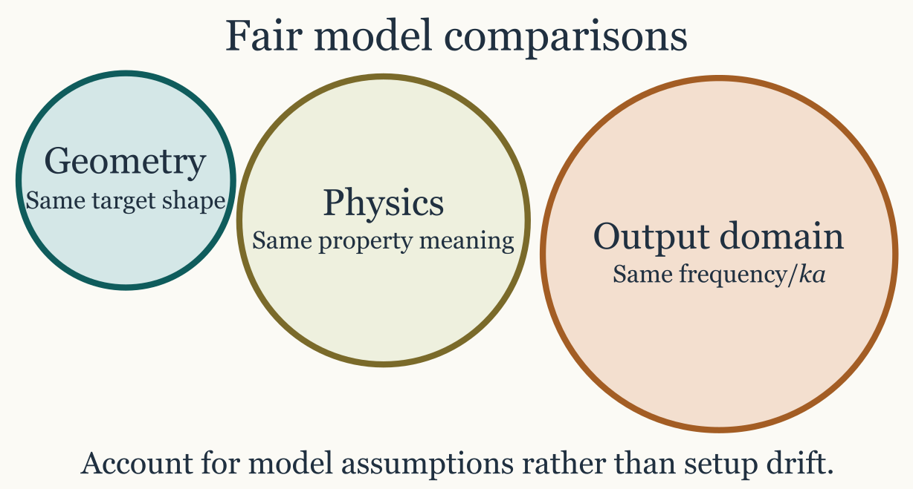

Comparing models on the same target
Source:vignettes/comparing-models/comparing-models.Rmd
comparing-models.RmdIntroduction
Cross-model comparison is most informative when the candidate families are read against broader reviews and inter-model benchmark studies (jech_etal_2015?; stanton_acoustic_1996?).
One of the strongest uses of acousticTS is not simply running a single model, but asking how several models behave on the same target description. That is often the clearest way to separate geometric effects from boundary-condition effects and approximation effects. A well-designed comparison can show whether two models are telling the same physical story in different mathematical languages or whether they are diverging because they are built for genuinely different regimes.
At the same time, model comparison is easy to do badly. If two models are run on different geometries, different frequency grids, different material assumptions, or different reporting quantities, the resulting curves may still be interesting, but they no longer isolate model behavior alone. At that point the comparison has become a mixture of model differences and setup differences, which is a much harder thing to interpret honestly.

Why compare models at all
Model comparison is especially helpful when more than one model is physically defensible for the same target, when a target sits between canonical and approximate regimes, when the user wants a sensitivity study rather than a single definitive prediction, or when the scientific question is about stability across assumptions rather than about a single favored formulation.
It is also one of the best ways to decide whether added model complexity is buying genuinely new physical insight or simply reproducing the same qualitative answer at greater cost. If a simpler model and a more elaborate one agree closely over the part of parameter space that matters, that agreement is informative. If they diverge strongly, the disagreement is informative too, provided the comparison was built fairly.
What a fair comparison requires
A useful comparison should keep fixed, as much as possible, the target geometry, the material-property interpretation, the frequency or orientation grid, and the reporting quantity being compared. In practice, that usually means creating one object, running several models on that same object, and extracting the results only after the model runs are complete.
library(acousticTS)
shape_obj <- cylinder(
length_body = 0.03,
radius_body = 0.0025,
n_segments = 60
)
obj <- fls_generate(
shape = shape_obj,
density_body = 1045,
sound_speed_body = 1520,
theta_body = pi / 2
)
frequency <- seq(38e3, 120e3, by = 6e3)
obj <- target_strength(
object = obj,
frequency = frequency,
model = c("dwba", "hpa")
)
dwba_out <- extract(obj, "model")$DWBA
hpa_out <- extract(obj, "model")$HPAThat workflow is preferable to building two nearly identical objects independently, because it reduces the chance of silent setup drift. If the object is reused, then any later disagreement is more likely to be telling the user something about the models themselves rather than about mismatched preprocessing choices.
Compare the same quantity
The same target can be compared in several output domains, but that
choice should be deliberate rather than habitual. TS is the
natural quantity for reporting differences in dB and for visual
communication. sigma_bs is often better when the question
is whether differences remain large on a linear scale or when later
averaging is needed. Complex amplitude is required when phase and
interference are part of the scientific question.
This distinction matters because two curves can look dramatically
different in TS while corresponding to modest differences
on a linear scale, or they can look similar in TS while
still implying important phase behavior that is invisible in a purely
logarithmic plot. That is one reason model comparison is closely related
to the combining
components article. Once phase-sensitive interpretation matters,
comparing only TS curves can become too coarse.
Comparing fits quantitatively
Once two model outputs have been aligned on the same grid, it is often useful to move beyond visual comparison and compute simple discrepancy measures such as mean absolute deviation (MAD), root mean square error (RMSE), or related summary statistics. Those summaries can be very informative, but only if they are computed in a domain that matches the scientific question. The same pair of curves can produce a small RMSE in one domain and a large RMSE in another, not because one calculation is wrong, but because the domains weight error differently.
When the question is about energetic or scattering-strength
agreement, those metrics are usually more meaningful in the linear
domain. In that setting, one compares sigma_bs values
directly and computes quantities such as:
\mathrm{MAD}_{\sigma} = \frac{1}{N} \sum_{j=1}^{N} \left| \sigma_{\mathrm{bs},1,j} - \sigma_{\mathrm{bs},2,j} \right|,
The corresponding linear-domain root mean square error is:
\mathrm{RMSE}_{\sigma} = \left[ \frac{1}{N} \sum_{j=1}^{N} \left( \sigma_{\mathrm{bs},1,j} - \sigma_{\mathrm{bs},2,j} \right)^2 \right]^{1/2}.
These linear-domain summaries are the more natural choice when the goal is to compare scattering strength, when later averaging is expected, or when one wants differences to scale directly with the physical size of the backscattering response. They are also the safer choice when comparing model fits to linear-domain observations or when the workflow later combines or averages responses across realizations.
By contrast, when the question is about agreement in reported target strength, then it is reasonable to compare in the logarithmic domain and compute quantities such as:
\mathrm{MAD}_{TS} = \frac{1}{N} \sum_{j=1}^{N} \left| TS_{1,j} - TS_{2,j} \right|,
The corresponding logarithmic-domain root mean square error is:
\mathrm{RMSE}_{TS} = \left[ \frac{1}{N} \sum_{j=1}^{N} \left( TS_{1,j} - TS_{2,j} \right)^2 \right]^{1/2}.
These dB-domain summaries are often the more interpretable choice when the comparison is tied to reporting practice, calibration-style tolerances, or questions framed explicitly in terms of target strength rather than linear scattering cross-section.
The practical rule is therefore straightforward. If the scientific question is about physical scattering magnitude, fitting in the linear domain is usually the better default. If the scientific question is about agreement in reported target strength, fitting in the logarithmic domain may be the more natural summary. What should be avoided is switching domains casually and then interpreting the resulting RMSE or MAD as if it had an invariant meaning across both.
This is also the reason one should decide on the comparison domain
before fitting or ranking models. A model that minimizes RMSE in
TS is not guaranteed to minimize RMSE in
sigma_bs, because the logarithmic transform changes the
weighting of discrepancies across low- and high-amplitude parts of the
response. In practical terms, dB-domain fitting tends to emphasize
relative agreement across a broad dynamic range, while linear-domain
fitting gives more weight to regions where the absolute scattering
strength is large.
If reference observations are available, the safest procedure is to
compute the comparison metric in the same domain in which the scientific
conclusion will be drawn. If the conclusion is about reported target
strength, use TS. If the conclusion is about linear
scattering strength, use sigma_bs. If both matter, it is
often worth reporting both rather than pretending that one metric
answers every comparison question.
Compare like regimes, not just like shapes
Even on the same object, some model comparisons are more meaningful than others. A fair comparison asks whether the two models are actually intended to approximate the same underlying regime. Geometry alone is not enough.
DWBA versus SDWBA is a natural comparison
because the second extends the first by relaxing deterministic phase
behavior. TRCM versus FCMS is natural because
both describe cylindrical targets but from different physical
reductions. PSMS versus HPA is informative
when the question is how much is lost by leaving an exact
prolate-spheroidal treatment for a simpler asymptotic approximation. In
each case, the comparison is meaningful because the two models are close
enough in intended use that their disagreement can be interpreted
physically.
By contrast, a comparison between models with unrelated boundary assumptions or incompatible approximation regimes may still be interesting, but it should be described honestly as a sensitivity study rather than as a pure model-performance comparison. If the physical assumptions differ, then the comparison is partly about workflow choice rather than about model behavior in isolation.
A practical comparison workflow
A robust comparison workflow usually starts by building one target object whose geometry and material properties are already physically defensible. The next step is to run all candidate models on one matched frequency grid. Only after that is it worth extracting the outputs into comparable data frames and examining both the overplotted curves and their pairwise differences.
That order matters because pairwise differences often reveal more than overplotted curves alone. A comparison that looks modest by eye may contain a systematic offset, a frequency-localized resonance mismatch, or a regime boundary where one approximation begins to fail.
comparison <- data.frame(
frequency = dwba_out$frequency,
TS_DWBA = dwba_out$TS,
TS_HPA = hpa_out$TS,
delta_TS = dwba_out$TS - hpa_out$TS
)
head(comparison)Once those aligned outputs exist, interpretation becomes much easier because the user can ask whether the disagreement is global, localized, monotonic, oscillatory, or tied to a known physical feature of one of the models.
How to interpret disagreement
When two models disagree, the next question is not automatically which one is right. The more useful sequence is to ask whether the geometry and properties were truly matched, whether the models are intended for the same regime, whether the disagreement is systematic or localized, and whether the difference tracks a known approximation such as weak scattering, high-frequency structure, phase randomization, or boundary simplification.
That sequence turns comparison from a plotting exercise into a modeling argument. A systematic offset might suggest a scaling or normalization difference. A localized mismatch might point to resonance behavior or to a limited approximation regime. A disagreement that grows steadily with acoustic size may indicate the point at which one model has left its most reliable operating range.
Recommended comparison sets
Some side-by-side comparisons are especially natural because they
answer clear physical questions. DWBA versus
SDWBA is useful for weak fluid-like elongated bodies when
the question is whether unresolved phase variability matters.
TRCM versus FCMS is useful for locally
cylindrical targets when the question is whether a high-frequency
two-ray picture is adequate. SPHMS versus HPA
is useful for spherical screening problems when a full modal treatment
is being compared against a faster approximation. PSMS
versus HPA is informative for smooth elongated targets, and
ESSMS versus solid-sphere or limiting sphere models is
informative when shell elasticity is the feature under examination.
Those pairings are not exhaustive, but they tend to produce comparisons that answer a well-posed question rather than a vague request to see how different the models are.
Connection to other workflow pages
This article should be used together with choosing a model, combining scattering components, and the individual theory pages for the models being compared. The workflow logic is different in each case. Choosing a model narrows the candidate set. Comparing models evaluates several plausible candidates on one shared target. Combining components asks a different question entirely and should not be confused with model comparison.
Final rule
A model comparison is most informative when it keeps the target fixed and varies the model assumptions deliberately. If the target, grid, medium, or reporting quantity changes at the same time, the comparison may still be useful, but it is no longer isolating model behavior alone. The safest workflow is therefore simple: hold the target definition steady, compare one quantity at a time, and interpret disagreement in terms of the physical assumptions each model was designed to represent.